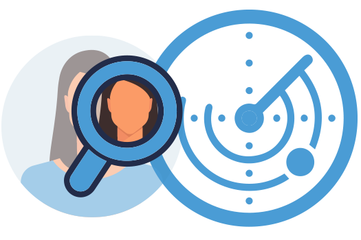
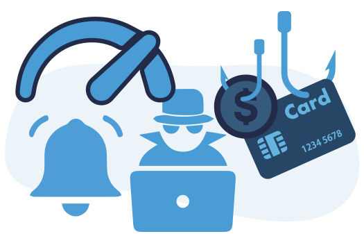
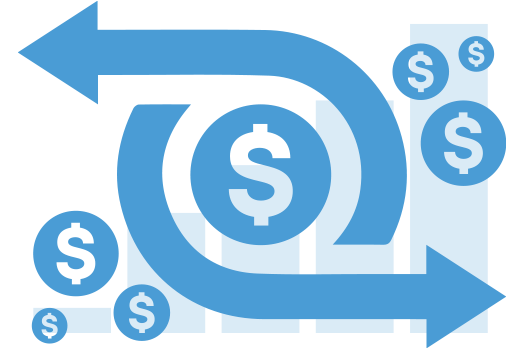
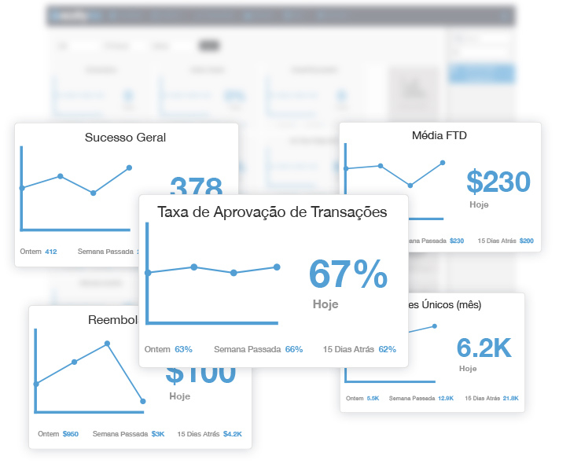
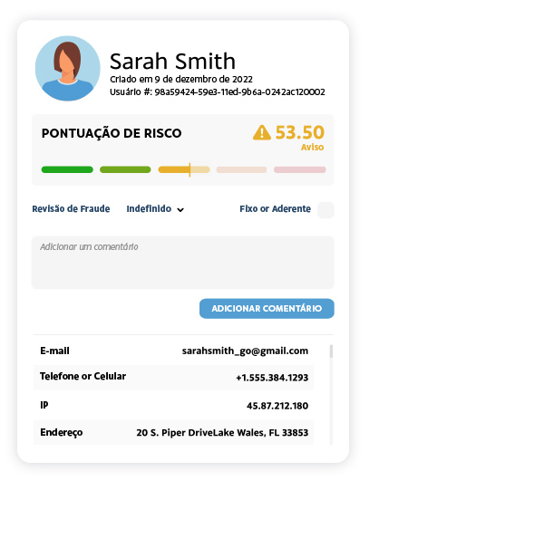
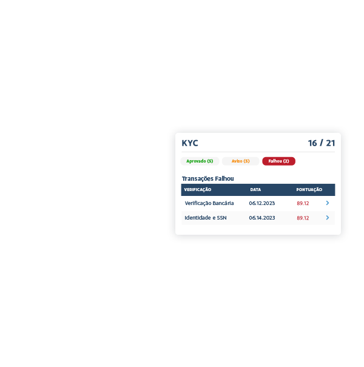
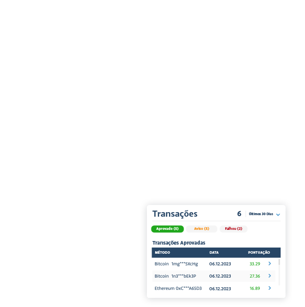
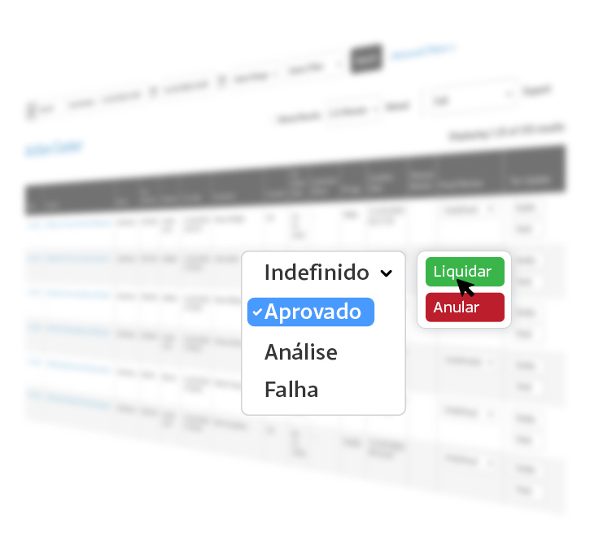
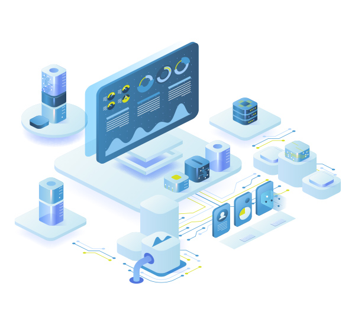

Inglês
Inglês Espanhol
EspanholNunca Deixe Escapar Atividades Suspeitas
Monitoramento contínuo com alertas em tempo real para proteção imbatível.

Detecção Precoce
Nosso monitoramento avançado em tempo real permite a detecção precoce de atividades suspeitas, ajudando você a evitar transações fraudulentas.

Resposta Mais Rápida
Reaja mais rapidamente a possíveis fraudes com todos os dados em uma única plataforma, minimizando perdas financeiras e reduzindo o impacto nos clientes.

Precisão Melhorada
As verificações em vários níveis com aprendizado de máquina garantem alertas precisos e permitem que você tome decisões informadas sobre possíveis fraudes.

Custo-Benefício
Com uma única plataforma de análise de dados e risco, você economizará tempo e dinheiro, reduzirá a revisão manual e simplificará o gerenciamento de fraudes.
Inteligência Profunda
KPIs de painel ao vivo para monitoramento de desempenho exato
Totalmente Personalizável
Assuma o controle de seu gerenciamento de riscos com nosso painel personalizável! Configure sem esforço seu resumo de riscos ativando os widgets que você deseja, criando uma interface personalizada e amigável.
Visualização de Filtro
De comerciantes a canais de pagamento, datas a clientes, nossa plataforma permite filtrar e focar! Diga adeus às pesquisas tediosas e olá ao gerenciamento de riscos simplificado e eficaz.
Fácil de Ler
Obtenha uma visão em tempo real do seu risco como nunca antes. De níveis de alerta em camadas a segmentos de prioridade de risco personalizados, todos os insights de que você precisa estão ao seu alcance.




Perfis de Clientes
Entenda, rastreie, gerencie e confie em seus clientes com facilidade.
A cColher Completa
Desde detalhes abrangentes da persona do cliente, resultados da verificação de dados até gerenciamento de listas, localização, ID do dispositivo, histórico, comportamentos e padrões, nossos perfis de clientes fornecem todos os detalhes suculentos de que você precisa para gerenciar riscos.
Transações
Diga adeus ao caos das transações. Todas as transações do cliente são vinculadas e filtradas no perfil associado, para que você possa encontrar e revisar rapidamente aquelas que precisam de atenção ou verificar o comportamento transacional em busca de atividades suspeitas.
Explorar Verificações de Identidade Digital
Centro de Ação
Recarregando dados a cada 30 segundos para mitigação precisa de fraudes.
Configure e Esqueça Rejeição Automática
Com base em seus limites de alto risco, nossa plataforma rejeita automaticamente quaisquer ameaças em potencial, para que você possa relaxar e se concentrar no que faz de melhor.
Revisão Instantânea de Fraude
Basta atualizar o status da revisão de fraude para ficar por dentro das ameaças em potencial e proteger sua empresa e seus clientes.
Análise Pré-Autorização da Transação
Analise o tráfego antes de enviá-lo para processamento e, com apenas um clique, defina as funções de liquidação ou anulação da transação para agilizar seu processo de gerenciamento de riscos.
Exibir Triagem de Fraude


Alavancagem B.I.
Otimize com precisão de dados.
Relatórios Inteligentes
Avalie os riscos com precisão, otimize o desempenho dos negócios e fique à frente de possíveis fraudadores. Configure facilmente relatórios personalizados com base em várias métricas, como registros, transações, depuradores, bancos de dados, dispositivos e insights multicamadas para fortalecer sua defesa contra fraudes, sem comprometer as conversões.
Relatórios de Simulação
Não importa se você está entrando em um novo mercado ou setor ou apenas deseja simular o cenário atual do mercado de fraudes para garantir que a defesa seja otimizada ou os relatórios permitem que você tome decisões informadas com base em dados.
Exibir Relatórios do B.I.